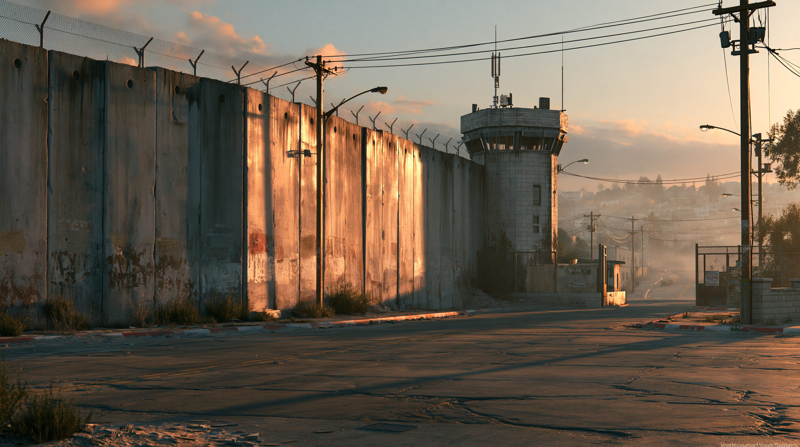
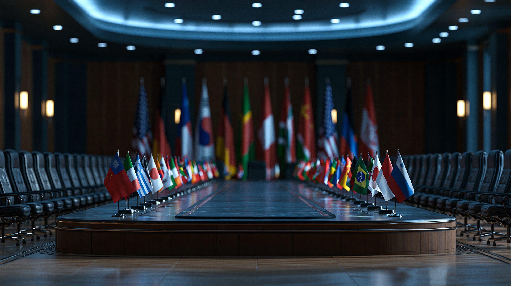
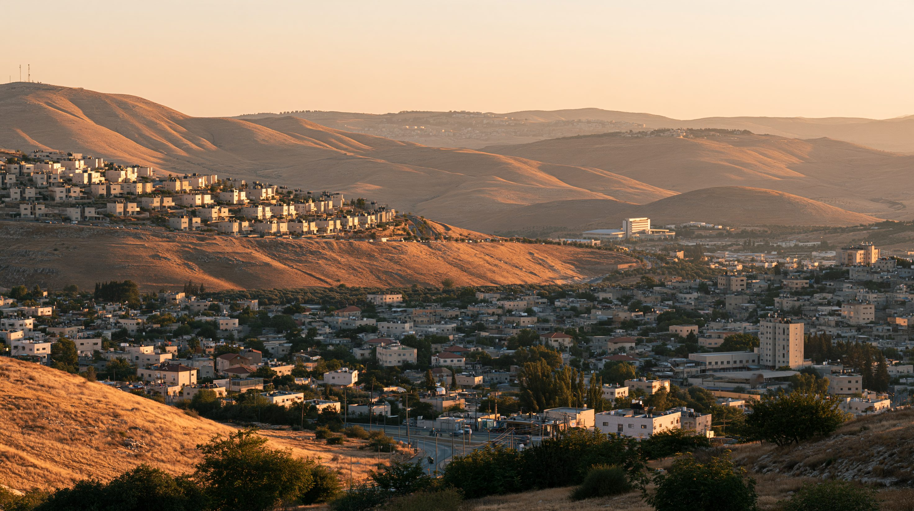

01論点 ―「国家」と認めることの意味
「国家承認」とは、ある国が別の国に対して「あなたを独立した国家として扱います」と表明する外交上の行為だ。世界に国境や国家を決める審判のような機関があるわけではなく、国と国が一つずつ「認める」か「認めないか」を選んでいる。パレスチナ問題でよく語られる「二国家解決」とは、イスラエルとパレスチナという二つの国が並んで存在する形で、この争いを終わらせようという構想を指す。
2025年9月、その二国家解決をめぐる状況が大きく動いた。イギリス・フランス・カナダ・オーストラリアなど10ヵ国以上が一斉にパレスチナを国家として承認したのだ。この中には、それまで承認を避け続けてきた主要7ヵ国（G7）のうちイギリス・フランス・カナダが含まれていた。この結果、国連加盟193ヵ国のうち157ヵ国、8割以上がパレスチナを国家と認めたことになる。
ところが、当のイスラエルとアメリカはこの動きに強く反発している。ネタニヤフ首相は「テロへの報奨だ」と述べ、トランプ大統領も国連総会の演説で同じ立場を示した。8割の国が「国家だ」と認めても、パレスチナは本当に国家になれるのか。国家として認められることは、現実に何を変えるのか。
02タイムライン ― 半世紀にわたる「認められる」ための歩み
PLO（パレスチナ解放機構）のアラファト議長が、アルジェでパレスチナの独立を宣言した。年末までに78ヵ国が承認したが、アメリカや西欧の主要国は動かなかった。
イスラエルとPLOが互いを交渉相手として認め合うオスロ合意を締結。パレスチナ自治政府（PA）が発足し、ヨルダン川西岸とガザの一部で暫定的な自治が始まった。
国連総会が賛成138・反対9の投票で、パレスチナを国連総会に出席できる「非加盟オブザーバー国家」に格上げした。正式な加盟国ではないが、外交上の地位は一段上がった。
ハマスによる越境攻撃をきっかけにガザ戦争が始まり、民間人の被害が急速に拡大した。2023年11月時点での承認国は138ヵ国だった。
4月、パレスチナの国連正式加盟を求める決議に賛成12票が集まったが、アメリカが拒否権を発動し否決された。その直後の5月、ノルウェー・アイルランド・スペインが承認を発表し、6月にはスロベニアも続いた。
7月末、フランスとサウジアラビアが共催した国連会議で「ニューヨーク宣言」が合意され、9月12日に国連総会で正式に採択された。その直後の9月21〜22日、イギリス・フランス・カナダ・オーストラリアなど10ヵ国以上が一斉に承認を発表し、承認国は157ヵ国に達した。

035つの視点 ― 同じ出来事が、まるで違って見える
「国家承認」という同じ出来事が、立場によってまったく違う意味を持つ。当事者と、それを取り巻く国々の見方を5つに整理する。

04データ・統計
パレスチナを承認した国の数の推移（国連加盟193ヵ国中）
1988年の独立宣言直後は78ヵ国だったが、2025年9月の承認ラッシュを経て157ヵ国（全体の約81%）に達した。 出典：国連総会資料、アルジャジーラ、アッバス議長の国連演説（2025年9月）
G7（主要7ヵ国）の承認状況
G7のうちパレスチナを承認したのはイギリス・フランス・カナダの3ヵ国。アメリカ・ドイツ・イタリア・日本は未承認のまま。 出典：各国政府発表、アルジャジーラまとめ（2025年9月時点）
05深掘り ― 承認が増えても、現実は動くのか
承認国が8割を超えても、パレスチナを取り巻く現実はほとんど動いていない。この「象徴」と「実態」のずれを、3つの角度から見ていく。
ただし、効果が全くないわけではない。パレスチナは2015年にICC（国際刑事裁判所）へ加盟しており、この地位を足がかりに2024年11月、ICCはネタニヤフ首相とガラント前国防相への逮捕状を出した。同じ2024年7月には、国際司法裁判所（ICJ）がイスラエルの占領そのものを「違法」とする勧告的意見を示している。国家承認の広がりは、こうした国際法上の追及を後押しする土台になっている。
「国家承認は何を変えるのか」という問いに、単純な答えはない。外交上の地位は確かに積み上がったが、占領という現実、そして国連加盟という制度上の壁は、承認だけでは動かせないままだ。承認する側とされる側、双方が抱える国内事情もまた、この先の展開を左右する。
